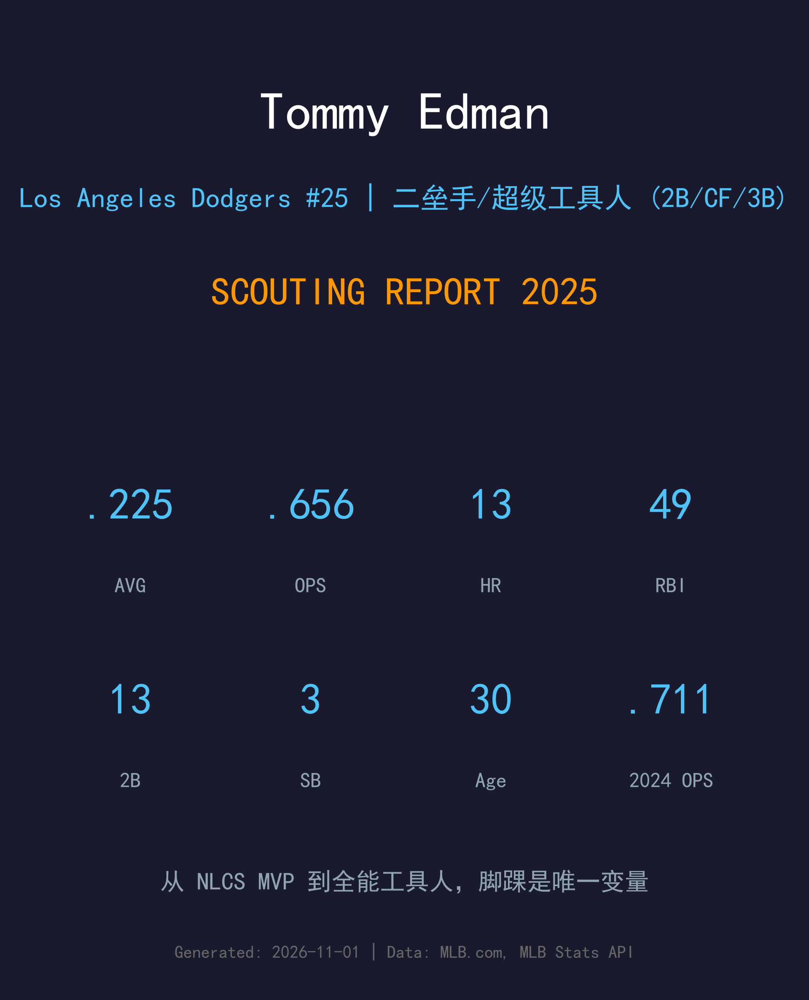
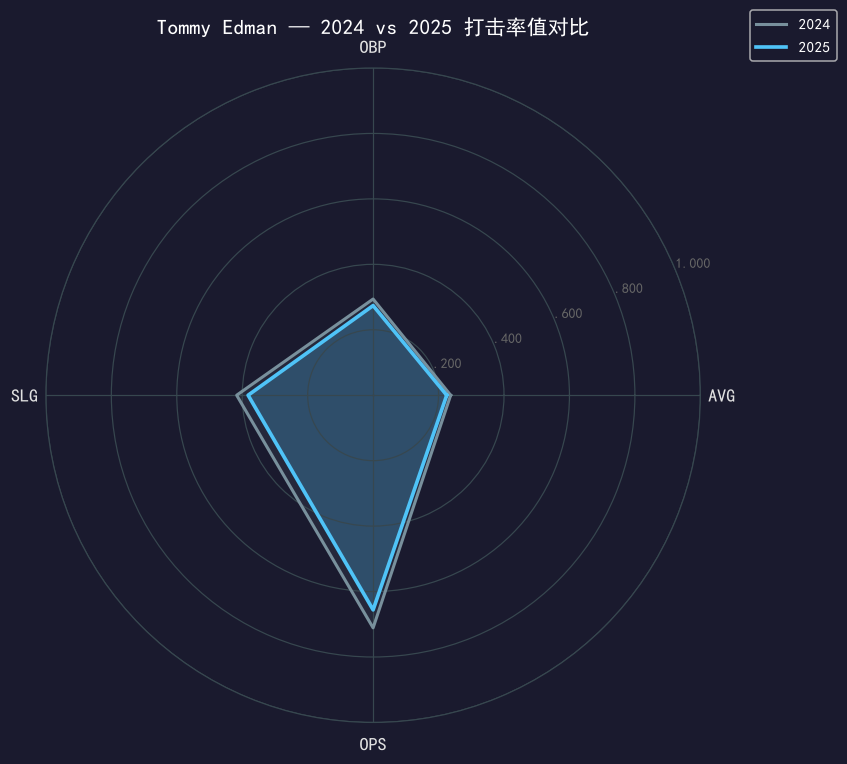
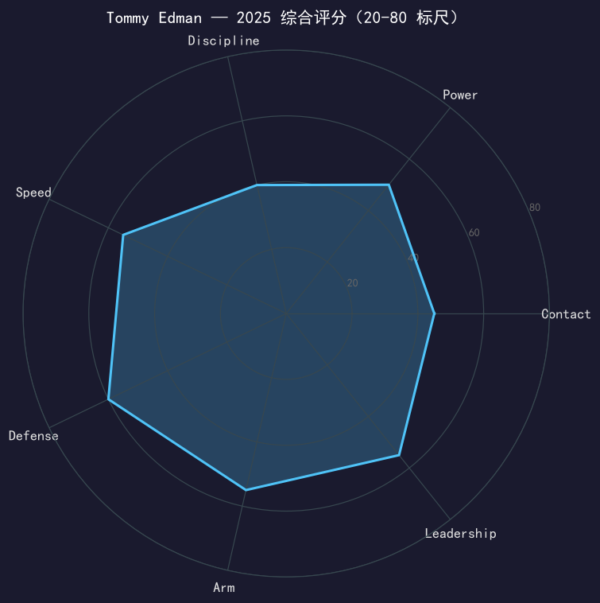

Los Angeles Dodgers #25 | 二垒手/超级工具人 | 左右开弓 | 万能胶

Tommy Edman 的 2025 赛季分裂成两半：开季前 30 场他是道奇最烫的打者之一（8 轰 24 分打点，5 轰来自前 9 场），之后右脚踝的两次伤病名单之旅（4/30-5/18、8/4-9/10）把他拖进了一条低产的漫长隧道。最终成绩单停在 .225/.274/.382、OPS .656——距 2024 年那个 NLCS MVP 赛季的进攻影响力有明显落差。
但他的价值从来不止于打击数字。整个赛季他在二垒（60 场先发）、中外野（19 场）、三垒（11 场）之间无缝切换，全季仅 2 次失误；教练组在十月依然把他钉在先发名单里——季后赛 16 场他先发 14 场守二垒，并在世界大赛第 3 场 18 局大战中贡献了那个扑救反弹球后传杀三垒的经典守备。
对 Edman 的评价需要分两层：作为打者，2025 是失意年；作为球员，他仍是这支球队最重要的「位置保险」。30 岁的他 offseason 的第一优先级只有一个——让脚踝彻底好起来。
以 switch-hitter 与全位置守备能力立足红雀主力，2021 年拿下国联二垒金手套，并进入国联 MVP 票选前十。
7 月从红雀交易至道奇，常规赛仅 37 场；季后赛爆发——NLCS 轰出 .407 打击率、11 分打点，11 安与 11 打点均平队史单一系列赛纪录，荣膺 NLCS MVP，随队夺冠。
开季前 9 场 5 轰；对马林鱼轰出道奇生涯首支再见安（10 局 2 分打点击球）。世界大赛 G3 18 局大战第 9 局，飞身扑救 Freeman 手套反弹球并传杀三垒，成为该场转折守备。
连续两年以多功能主力身份夺冠，2025 年季后赛 16 场出赛、2 轰 8 分打点。

| 赛季 | G | PA | AVG | OBP | SLG | OPS | HR | RBI | 2B | BB | SO | SB |
|---|---|---|---|---|---|---|---|---|---|---|---|---|
| 2024 | 37 | 153 | .237 | .294 | .417 | .711 | 6 | 20 | 5 | 11 | 30 | 6 |
| 2025 | 97 | 377 | .225 | .274 | .382 | .656 | 13 | 49 | 13 | 19 | 61 | 3 |
率值全面下滑，但有两个必须计入的上下文：第一，2024 年的 37 场是小样本蜜月期，2025 年 377 个打席才是对手开始针对性布置后的真实水位；第二，脚踝伤病贯穿全季——开季前 30 场（8 轰）与两次 IL 之后的产出判若两人。13 轰 49 打点、全季仅 2 次失误，这份成绩单放在任何一个「工具人」身上都是优秀的；只是道奇和球迷都见过他 2024 年的上限，难免有落差感。
Edman 的 swing 是典型的 contact-first 结构：重心低、路径短、攻守转换快，power 来自 torque 而非蛮力。2025 年他的下盘被脚踝拖累，torque 链条从地面就断了——SLG 从 .417 掉到 .382，双杀打后的长打跟进能力明显减弱。19 次保送（保送率 5.0%）说明他不是等球型打者，状态差时没有「保底上垒」方案。
60 场二垒、19 场中外野、11 场三垒——全季 2 次失误。他的守备价值不在单项数据，而在「任何位置都够格先发」的稀缺性。世界大赛 G3 那个 play（右外野短距离飞身接反弹球、起身传杀三垒）是这种价值的缩影：不是常规动作的守备，他靠预判和爆发把它变成了出局数。
4 月 30 日与 8 月 4 日两段 IL 都指向同一个右脚踝。脚踝对 switch-hitter 的下盘稳定是命门——这解释了为什么开季重炮与赛季中段的熄火差距如此之大。9 月 10 日回归后他赶上了季后赛的末班车状态，但全季 97 场的出赛数对一支依赖他多功能性的球队来说太少了。
开季 9 场 5 轰、对马林鱼的再见安打，让四月充满想象空间；五月起脚踝开始拖后腿，夏天的他只是一个「能守多个位置的普通人」；十月他重新变回教练组信任的那个 Edman——16 场先发 14 场，两轰包含外卡战对红人与 NLDS 对费城人的关键长打。戒指到手，脚踝的账单也到了该结清的时候。

全能工具人的基准线，脚踝健康决定他是 50 还是 55
B 级 / 主力级多功能球员
道奇 2025 季后赛之路：外卡轮 2-0 红人 → NLDS 3-1 费城人 → NLCS 4-0 酿酒人 → 世界大赛 4-3 多伦多蓝鸟（二连霸）。
| G | PA | AVG | OBP | SLG | OPS | HR | RBI | BB | SO |
|---|---|---|---|---|---|---|---|---|---|
| 16 | 67 | .222 | .258 | .333 | .591 | 2 | 8 | 3 | 18 |
Tommy Edman 的未来是一道简单的选择题：健康的他是联盟最值钱的多功能球员之一，受伤的他是普通工具人。2026 赛季开始前他需要做的不是练球，而是把右脚踝彻底解决。好消息是他只有 30 岁，switch-hitter 与守备技能都不会因一次手术而贬值。
短期：彻底解决脚踝问题，春训找回开季前 30 场的挥棒状态
中期：回到 2024 年 NLCS 版本的水位，OPS 回到 .730+ 区间
长期：道奇内野/外野的万能保险，未来五年主力轮值的第一替补
Tommy Edman（全名 Thomas Hyunsu Edman）出生于密歇根州庞蒂亚克，母亲是韩裔——这个中间名 Hyunsu 是他与韩国棒球渊源的注脚。他成长于圣迭戈的 La Jolla Country Day 学校（父亲 John 是该校棒球队主教练），随后进入斯坦福大学，大三时以 40 年来斯坦福棒球运动员最高 GPA 毕业。2016 年选秀第六轮被红雀选中。
2019 年首秀后，他凭借 switch-hitting 与全位置守备迅速成为红雀主力，2021 年拿下国联二垒金手套。2024 年 7 月，道奇在一笔交易中把他带到洛杉矶——这个决定改写了双方的历史：他常规赛仅打 37 场，却在季后赛轰出 NLCS MVP 级别的表现（.407、11 分打点），帮道奇拿下世界大赛。
2025 年他与妻子 Kristen 的孩子们已经开始出现在场边；从斯坦福学霸到金手套再到十月英雄，Edman 的职业生涯始终在「被低估」和「证明自己」之间循环。脚踝的伤是他下一个要跨过的坎。